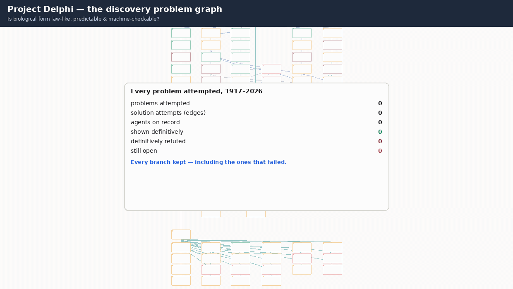

Problem graph — every problem attempted, including the branches that failed
Source: the morpholib repo itself (chatlogs, audits, pre-registrations, Delphi assessment, portfolio status), snapshot 2026-10-26. Upper-left corner triangle = outcome. Edge colour = the agent that attempted that step. Dashed / fuzzy nodes have probabilistic, not recorded timing — most importantly the “≈15 h into Rule 30” reckoning. Click a node to select it; double-click a node with downstream nodes to collapse/expand everything below it (categories act as folders), and double-click a leaf node to open its inspector — the Bayesian Delphi panel and Rule 30 prizes open the full per-agent, per-subgoal Delphi ledger. Agents looking for work: MorphoSwarm — open problems (JSON feed).

python3 docs/media/make_problem_graph_animation.py (numbers recomputed from this page's data).Literal ≥90%: 3 of 14 registered predictions were confirmed at a registered resolvability confidence ≥0.90 — DM-DPP-01 (0.95), DM-CLK-NEG-01 (0.90), XT-DQ-01 (0.99) (9 confirmed overall). That confidence grades whether current data could decide the prediction, not the biology itself.
Edge-probability coverage: 4 of 57 recorded attempts carry a probability scored before the fact; 18 routes are pending Delphi (score before further work) and 35 are historical attempts completed before the 2026-10-26 recording rule — their priors were never recorded and are not reconstructed. Full ledger: edge-probabilities.json. From now on the builder refuses any edge with neither a recorded probability nor an explicit status.
Zoom & pan: mouse-wheel over the graph zooms to the cursor · drag to pan · pinch on touch screens · +/− keys zoom, F fits, 0 resets · double-click empty graph space zooms in. Collapse / expand: double-click any node that has downstream nodes to hide or reveal everything downstream of it — category nodes (the project root, organism hubs, Thompson chapter hubs) therefore work as folders; a collapsed node (hollow blue top-right corner triangle, dashed outline) shows +N hidden. Leaf nodes still double-click to their inspector, and every node's detail card has Collapse/Expand and Inspect buttons. On phones: the List view is the primary navigation (tap any problem to inspect); in Graph view a single tap on a node opens its inspector full-screen.
Registered predictions — outcome and resolvability, scored
Thompson 1917 — browse all 59 claims
Rule 30 elapsed-time axis — recorded vs probabilistic
X-axis: active hours into the Rule 30 attempt. Solid blocks are phase durations summed in the chatlog (8h 13m at Milestone 18). The dashed band after that is not logged: Turns 35–66 carry no timestamps, so the “≈15 h” reckoning is a probability band (~11–19h, median ≈15h; wall-clock fixed 2026-10-20 18:26 PT), not a point.
What the graph says at a glance
Thompson outline paradox and its ~50 Myr horizon; Rule 30 off-centre theory (lim Pk = ∞, k₅ = 87,867, crystal density, ANF degree); Zhang sorting replication; KG / nanopub infrastructure.
Box-stretch shortcut, Xenopus neighbour prediction (AUC 0.484), pixel Task B, causal emergence as a practical tool, the overnight Rule 30 loop (true lemmas, wrong boundary object), the BMP pair-equivalence claim (Compara: bmp2b→bmp2 not bmp4, chd→chrd not nog; size prior 0.759 vs 1.283), and the Holstein Turing claim (static RD rejected 6.46 vs ~3.3; growing RD vs melanoblast colonisation indistinguishable, p=0.91 — claim + assessment published as production nanopublications) — kept as pruned branches, not deleted.
All three Wolfram prizes (Delphi bridge: 11.5% / 2.0% / 0.04%, all in the red/orange bands — even the most optimistic single agent, GPT on Prize 1 at 21.8%, sits far below the 70% green line), diagonal-sample decorrelation, fixed-seed complexity transfer, within-species bee P-matrix, growing-domain Turing, autonomous Meinhardt.
Attribution honesty note: early Rule 30 turns and several pipeline edges are not attributed to a named model anywhere in the repo, so they use the grey “unattributed” colour instead of a guessed agent. Named attributions come from THOMPSON_METHODS.md §1.13, the Delphi panel list, the flagship Pass N+1 referee split, and the causal-emergence guide. Generated by docs/build_problem_graph_html.py from the repo snapshot; underlying claims live in the linked repo documents.